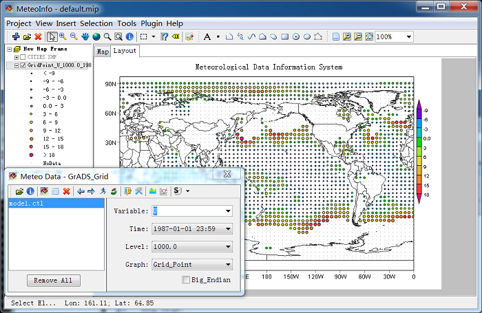
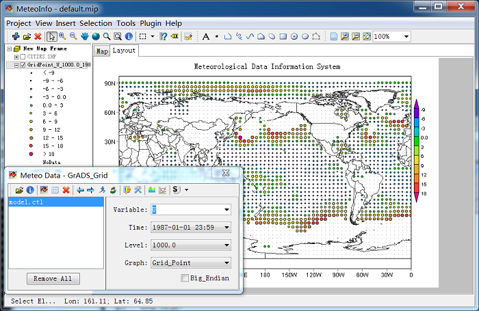

Grid Fill and Grid Point¶
With Grid Fill graphic, all grid data were plotted with rectangle polygons.

With Grid Point graphic, all grid points will be plotted as point shapes with grouped colors and sizes.
With Grid Fill graphic, all grid data were plotted with rectangle polygons.
With Grid Point graphic, all grid points will be plotted as point shapes with grouped colors and sizes.
